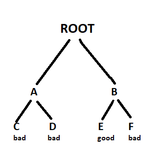

Backtracking
Backtracking is a form of recursion.
The usaual scenario is that you are faces with a number of options,and you must choose one of these.After you make your
choice you will get a new set of option;that what set of options you get depends on what choice you made.This procedure
is repeated over and over until you reach a fianl state.if you made a good sequence of choices,your final sate is a goal
state;
if you didn't,it isn't.
Conceptually you start at the root of a tree;the tree probably has some good leaves and some bad leaves,though it may be that
the leaves are all good or all bad.you want to get to a good leaf.At each node,beginning with the root,you choose one of its
childern to move to,and you keep this up until you get to a leaf.
Suppose you get to a bad leaf.You can backtrack to continue the search for a good leaf by revoking your most recent choice,
and
tring out the next option in that set of option.if you run of options,revoke the choice that got you here,and try another
choice
at that node.if you end up at the root with no option left,there are no good leaves to be found.
This needs an example

- Starting at root,your option are A and B.you choose A.
- At A,your option are C and D.you choose C.
- At A,you have already tried C,and it failed.try D.
- D is bad.Go back to A
- At A,you have no option left to try.Go back to Root
- At root,you have already tried A.Try B.
- At B,your options are E and F.try E
- E is good,Contratulations!
In this example we drew a picture of a tree.The tree is an abstract model of the possible sequencenof choices we could
make.There is also a data structure called a tree,but absolutely we dont have a data structure to tell us what choices we
have.(if we do have an actual tree data structure,backtracking on it is called depth-first searching
The Backtracking algorithm
boolean solve(Node n){
if n is a leaf is a node
if the leaf is a goal node,return true
else return false
} else {
for each child c of n {
if solve(c) succeeds,return true
}
return false
}
}
Notice that the algorithm is expressed as a boolean function.This is essential to undersatnding the algorithm.if
solve(n) is true,that means node n is a part of a solution--that is,node n is one of the nodes on a path from the root to
some goal node.we say that n is slovable.if solve(n) is false,then there is no path that includes n to any goal node
How does it work?
- if any child of n is solvable,then n is solvable
- if no child of n is solvable,then n is not solvable
Hence,to decide wheather any non-leaf node n is solvable(part of a path to a goalnode),all you have to do is test wheather any
child of n is solvable.This is done recursively,on eachchild of n,In the above code this is done by the lines.
for each child c of n {
if solve(c) succeeds,return true
}
return false
Eventually the recursion will "bottom" out at a leaf node.if the leaf node is a goal node,it is solvable,if the leaf node is not a goal
node,it is not solvable.This is our base case.In the above code,this is done by the lines
if n is a leaf node {
if the leaf is a goal node, return true
else return false
}
The backtracking algorithm is simple but important.you should understand it thoroughly.Another way of stating is as follows:
- if the tree consist of a single leaf,test wheather it is good node.
- Otherwise,search the subtree until you find one containing a goal node,or until you have
searched them all unsuccessfully
Non-recursive backtracking,using a stack
Backtracking is a rather typical recursive algorithm,and any recursive algorithem can be rewritten as a stack algorithm. In fact,
that is how your recursive algorithms are translated into machine or assembly language
boolean solve(Node n) {
put node n on the stack;
while the stack is not empty {
if the node at the top of the stack is aleaf {
if it is a goal node,return true
else pop it off the stack
}
else {
if the node at the top of the stack has untried childern
push the next untried child onto the stack
else pop the node off the stack
}
return false
}
Starting from the root,the only nodes that can be pushed onto the stack are the childern of the node currently on the top of the
stack, and these are only pushed on the child at a time;hence,the nodes on thesatck at all times describe a valid path in the
tree.Nodes are removed from the stack only when it is known that they have no goal nodes their descendents.therefore,
if the root node gets removed(making the stack empty),there must have been no goal nodes at all,and no solution to the problem
When the stack algorithm terminates successfully,the nodes on the stack from(in reverse order) a path from the root to a goalnodes.
Similarly,when the recursive algorithm finds a goal node,the path information is embodied(in reverse order)int the sequence of
recursive calls.Thus as the recursive unwinds,the path can be recovred one node ar a time,by(for instance)printing the node
at the current level,or storing it in an array.
Here is the recursive backtracking algorithm,modified slightly to print(in reverse order) the nodes along the successful path:
boolean sovle(Node n) {
if n is a leaf node {
if the leaf is a goal node {
print n
return true
}
else return false
} else {
for each child c of n {
if solved(c) success {
print n
return true
}
}
return false
}
}
}
Keeping backtracking simple
All of these version of the backtraacking algorithm as pretty simple,but when applied to a real problem,they can get pretty
cluttered up with details.Even determining wheather the node is a leaf csnbe complex.
For example,if the path represents a series of moves in a chess endgame problem,the leaves are the checkmate statemate solutions
To keep the program clean,therefore,tests like this should be buried in methods.In a chess game,for example,you could test
wheather a node is a leaf by writing a gameOvermethod(or you could even call it isLeaf).This method would encapsulate all the
ugly details of figuring out wheather any possible moves remain.
Notice that the backtracking algorithms require us to keep track,for each node on the current path,which of its childeren have
been tried already (so we dont have to try them again).In the above code we made this look simple,by just saying for each child c of n
In reality,it may be difficult to figure out what the possible children are,and there may be no obvious way to step through them.
In chess,for example, a node can represent one arrangement of pieces on a chessboard,and each child of that node can
reprent the arrangement after some piece has made a legal move.How do you find thesechildren,and how do you keep track of which ones you've
already examined?
The most straightforward way to keep track of which children of the node have been tried is as follows:Upon initial entrty to the
node (that is,when you first get there from above),make a list of all its children.As you try each child,take it off the list.when
the list is empty,there are no remaining untried children,and you can return "failure". This is a simple approach, but it may requires quite
a lot of additional work
There is an easier way to keep track of which children have been tried, if you can define an ordering on the children.
if theere is an ordering, and you know which child you just tried,you can determine which child to try next.
For example,you might be able to number the children 1 through n,and try them in numerical order. Then, if you have just tried
child k, you know that you have already tried children 1 through k-1,and you have not yet tried childeren k+1 through n
if you are trying to color a map with just four colors,you can always try red first, then yellow,then green,then blue.
if child yellow fails, you know to try child green next.If you are searching a maze, you can try choices in the order left,straight,right
(or perhaps,north,east,south,west).
it isn't always easy to find a simple way to order the childern of a node.In the chess game example, you might number your pieces
(or perhaps the sequence of the board) and try them in numerical order,but in addition each may also have several moves and these must also be ordered
Example:Tree Search
For starters, lets do the simplest possible example of backtracking,which is searching an actual tree. we will also use the simplest kind
of tree, a binary tree
binary tree is a data structure composed of nodes.One node is designed as the root node. Each node can reference(point to) Zero, one, or two
other nodes, which are called its children. The children are referred to as the left child and/or the right child
All nodes are reachable (by one or more steps) from the root node, and there are no cycles. For our purpose, although this is not
part of the definition of a binary tree, we will say that a node might or might not be a good node, and will contain its name
Thhhe first example in this paper(which we repeat here) shows a binary tree.
Heres a definition of the Binary Tree class:
public class BinaryTree {
BinaryTree leftChild=null;
BinaryTree rightChild=null;
boolean isGoalNode=false;
String name;
BinaryTree(String name, BinaryTree left,BinaryTree right,boolean isGoalNode) {
this.name=name;
leftChild=left;
rightChild=right;
this.isGoalNode=isGoalNode;
}
}
Next we will create a TreeSearch class, and in it we will define a method makeTree() which construct the above binary tree.
static BinaryTree makeTree() {
BinaryTree root a, b, c, d, e, f;
c=new BinaryTree("C",null,null,false);
d=new BinaryTree("D" null,null,false);
e=new BinaryTree("E" null,null,true);
f=new BinaryTree("F" null,null,false);
a=new BinaryTree("A" c,d,false);
b=new BinaryTree("B" null,null,false);
root=new BinaryTree("Root",a,b,false);
return root;
}
Heres a main program to create a binary tree and try to solve it:
public static void main(String args[]) {
BinaryTree tree=makeTree();
System.out.println(solvable(tree));
BinaryTree tree = makeTree();
System.out.println(solvable(tree));
}
And finally, heres the recursive backtracking routine to "solve" the binary tree by finding a goal node.
static boolean solvable(BinaryTree nodes) {
/ * 1*/ if (node==null) return false;
/ * 2*/ if (node.isGoalNode) return true;
/ * 3*/ if (solvable(node.leftChild) return true;
/ * 4*/ if (solvable(node.rightChild)) return true
/ *5*/ return false;
}
Heres what the numbered lines are doing
- if we are given a null node,its not solvable.This statement is so that we call this method with the chideren of a node
without first checking wheather those children actually exist.
- if the above we are given is a goal node, return success
- see if the left child of nodenis solvable, and if so, conclude that node is solvable. we will only get to this line ifnode
is non-null and is not a goal node, says to.
- Do th same thing for the right child.
- since neigther child of node is solvable, node itself is not solvable.
This program runs correctly and produces the unenlightening result true.
Each time we ask for another node, we have to check if it is null. In th eabove we put that check if it is null
In the above we put that check as the first thing in solvable.alternative would be to check first wheather each child exists,
and recur only if they do, that alternative version.
stactic boolean solvable(BinaryTree node) {
if (node.isGoalNode) return true
if (node.leftChild!=null && solvable(node.leftChild) return value;
if (node.rightChild!=null && solvable(node.rightChild) return true;
return false;
}
What are the children?
One of the things that simplifies the above binary tree search is that, at each choice point, you can ignore all the previous
choices. previous choices dont give you any information about what you should do neaxt, as far as you know both the left and right
child are possible solutions in many problem.
Consider for example the problem of four-coloring a map.it is theorm of mathematics that any map on a piane, no matter
how convoluted the countries are, can be colored with the most for colors, so that no twocountries that share a bored are the same color
There are two ways to do this:
- Method 1. try each of the four possible colors,and recur. When you run out of countries, check wheather you are at a goal node
- Method 2. Try only those colors that have not alreadt been used for an adjacent contry and recur. if and when you run out ofcountries
you have successfully colored the map
boolean mapiOk()
Used by method 1 to chec(at a leaf node) wheather there is an adjacent node already colored with the given color.
boolean okToColor(int row, int column, int color)
Used by method 2 to check, at evert node, wheather there is an adjacent node already colored with the given color
init[] nextRowAndColumn(int row, int column)
Used by both methods to find the next "country" (actually the row and column of the next square on the checkboard).
heres the code for method 1:
boolean explore1 (int row, int column, int color) {
if(row>=NUM_ROWS) retuen mapIsOk();
map[row][column]=color;
for(int nextcolor=RED; nextColor <= BLUE;nextColor++) {
int[] next= nextRowAndColumn(row.column);
if( explore1(next[0], next[1],next color) } return true;
}
return false;
}
Heres the code for method 2:
boolean explore2 (int row, int column, int color) {
if (row >=NUM_ROWS) return true;
if (okToColor(row,column,color)) {
map[row][column]=color;
for (int nextColor=RED; nextColor < =BLUE; nextColor++)
int[] next = nextRowAndColumn(row,column);
if (explore2(next[0],next[1],nextColor)) retuen true;
}
}
Those appear pretty similar and you might think they are equally good.However, the timing information suggests otherwise:
|
2by3 map |
3by3 map |
3by4 map |
| method 1: |
60 ms |
940 ms |
60530 ms.(1 minute) |
| method 2: |
0 ms |
0 ms |
0 ms |
The zeros in the above table includes times to start to measure (less than 1 mili second).why this huge difference
Eigther of these methods could have exponential growth.Eliminating a node automatically eliminates all of its descented
and this will often prevent exponential growth. conversely,by waiting to check until a leag node is reached exponential
growth is practically guaranteed.
Debugging technique
often our first try at a program doesnot work. and we need to debug it. Debugging are helpful, but sometimes we need to fall
back on inserting print statement.There are some simple tricks to making effective of print statement
Trick #1: indent when you print method entries and exits
often,the best debugging techniques is to print every method call and return(or atleast the mostimportant ones)
its hard to match up method exists with their corresspoding entries
Trick #2 : Use specialised print methods for debugging
Dont clutter up your actual code more than you must. also remember that code inserted for debugging purpose can itselgcontain bugs
static string indent=""
static string name(BinaryTree node){
if(node==null)return null;
else return node name
static string name(Binarytree node){
if(node==null)return null;
else return node.name;
}
Static void enter(BinaryTree node) {
System.out.print(indent +"Entering solvable"("+name(node")+")");
indent=indent+" ";
}
static boolean yes(BinaryTree node)
indent =indent.substring(3);
System.out.println(indent+"solvable("+name(node)+")return true");
return true;
static boolean no(BinaryTree node){
indent=indent.substring(3);
System.out.print(indent+"solve"("+name(node")+")return false");
return false;
}
}
To use this code, we modify solvable as follows:
static boolean solvable(BinaryTree node){
enter(node);
if(node==null)return yes(node);
if(solvable(node.leftChild)return yes(node));
if(solvable(node.rigthChild)return yes(node)
return no(node);
}
And we get these result:
Entering solvable(Root)
| Entering solvable(c)
| | Entering solvable(c)
| | | Entering solvable(null)
| | | solvable(null) return false
| | Entering solvable(c)
| | |Entering solbale(null)
||| solvable(null) returns false
| | solvable(c) return false
| | Entering solvable(D)
| | | Entering solvable(null)
| | | solvable(null) return false
| | solvable(D) return false
| solvable(A) return false
| | Entering solvable(E)
| | solvable(B) return true
| solvable(Root) return true
solvable(Root) return true
true
Trick #3: Never discard your debugging statements.
writing debugging statement is progrsmming too Often its as much work to debug the debugging statement
as it is debug the actual program.
Obviously you wont want to print out all this debugging inform ation from a program you are ready to submit
or turn over to your manager) you could comment out your debugging calls, but that can be a lot of work,
whats more,in the above example, you would have to replace every return(yes(node)) with return (true), and every return(no(node)) with return false.
with all these changes you might introduce new bugs into your program.
The simple statement is to make your debugging statement conditional for example
static final boolean debugging=false
static void enter(BinaryTree node)
id(Debugging){
System.out.println(indent + "Entering solvable("+name(node)+")"
indent= indent+ " "
}
}
)
Static boolean yes(Bianrytree node)
}
if(debugging) {
indent=indent.substring(3)
Sysytem.out.print(indent + "solvable(" + name(node)+")return true)
}
return true;
In industry actual program often have multiple flags to control different aspects of debugging
Dont worry too much about making code larger,modern compilers will notice that since the variable debugging in final
it can be true, and the controlled code will be discarded
Create an Example
if an Exception is thrown, you can get information about just where it happened by using it the message
printStackTrace(printStream) Since an Exception is an object like other,you cancreate and throw your own exception
hoever, java program donr always realize that you can create an exception without throwing it.
For example the followinh code
new Exception("checkpoint charlie").printStackTrace(System.out)
will print out a message something like this, and the program will then continue normally.That is the above
code just acts like a print statement
java.lang.Exception:checkpoint charli
TreeSearch.solvable(TreeSearch.java:53
at TreeSearch.solvable(TreeSEarch.java:57)
at TreeSearch.main(TreeSearch.java:72)
at_SHELL38.run(_SHELL38.java:16)
at blue.runtime.ExecServer.suspend.ExecServer.suspendExecution(Unknown source)
Example: cindy's puzzle
I call the folllowing puzzle "cindy's puzzle" for historical reasons. you have some number n nof black marbies
and the same number of white marbies, and you have a playing board which consist simplyof a line 2n+1 spaces to put
the marbies in start withthe black marbies all at one end(say, the left)the white marbies all at the
other end, and a free space in between
The goal is to reverse the positions of the marbles:
The black marble can only move to the right, and the white marbles can only move to the left
(no backing up).At each move, amarble can eigther:
- move one space ahead,if that space is clear
- jump ahead over exactly of the opposite color,if the space just beyond that marble is clear.
- move one space ahead, if that space is clear,or
- jump ahead over exactly of the opposite color,if the space just beyond is clear
For example ,you could make the following sequence of moves:
| Starting position: |
 |
|
|
 |
|
| |
|
|
|
|
|
| Black moves ahead: |
|
|
|
|
|
| |
|
|
|
|
|
| White jumps: |
|
|
|
|
|
| |
|
|
|
|
|
| Black moves ahead: |
|
|
|
|
|
| |
|
|
|
|
|
| Black jumps: |
|
|
|
|
|
| |
|
|
|
|
|
| White moves ahead: |
|
|
|
|
|
| |
|
|
|
|
|
| Stuck! |
stuck!
the backtracking method is named solvable and returns a boolean. in solvable we shall need to check
wheather we are at a leaf,which in the case means a position from which no further moves are possible
Now we have a similar ordering of moves to use in our program just check in order the 2n+1 spaces of the boared
for each space,eigther zeo or one move is possible with this understanding we can write a boolean method camMove
(int[] board,int position)which determines wheather a move is possible from the given position.
- if the position is empty,no moves is possible
- if the position contains a black marble,the method checks for a move or jump to the right
- if the position contains a white marble,the method checks for a move to the left
we write another method init[] makeMove(int[] oldBoard,int position) that will take a board and a position
make a move from that position,and return as its value a new board(we could write this somewhat more efficiently by changingthe old board
rather than creating a new one,but here we are more concerned with simplicity.
in technical jargon makeMove is"applocative rather than"mutative"
Along with canMove and MakeMovewe are using methods puzzleSolved and printBoard
with meaning that should be obvious.
boolean solvable(int[] board) {
if(puzzleSolved(board){
return false
}
for(int poistion=0;position(Board_size;position++)
if(canMove(board,position)){
int[] newBoard=makeMove(board,position);
if(solvable(newBoard))
printBoard(newBoard);
return true
}
}
return false;
Here is some output from the program
16. WHITE WHITE WHITE ____BLACK BLACK BLACK
15. WHITE WHITE WHITE BLACK ___ BLACK BLACK
14. WHITE WHITE ____BLACK WHITE BLACK BLACK
13. WHITE ___ WHITE BLACK WHITE BLACK BLACK
12. WHITE BLACK WHITE ____WHITE BLACK BLACK
11. WHITE BLACK WHITE BLACK WHITE ____ BLACK
10. WHITE BLACK WHITE BLACK WHITE BLACK _____
9. WHITE BLACK WHITE BLACK _____ BLACK BLACK
8 WHITE BLACK ____ BLACK WHITE BLACK WHITE
7. _____BLACK WHITE BLACK WHITE BLACK BLACK
6. BLACK _____ WHITE ____WHITE BLACK WHITE
5. BLACK BLACK WHITE ____WHITE BLACK WHITE
4. BLACK BLACK WHITE BLACK WHITE _____ WHITE
3. BLACK BLACK WHITE BLACK_____ WHITE WHITE
2. BLACK BLACK ____BLACK WHITE WHITE WHITE
1. BLACK BLACK BLACK _____ WHITE WHITE WHITE
Notice that the solutiionis given in reverse order.BLACK starts out on the left and WHITE on the right,as in the last
line ive added numbers to the actual output in the order to emphasize this point.backtracking always produce its
results(sequence of choices)in reverse order,it is up to you,the programmer,to reverse the result again to get
them in the correct order